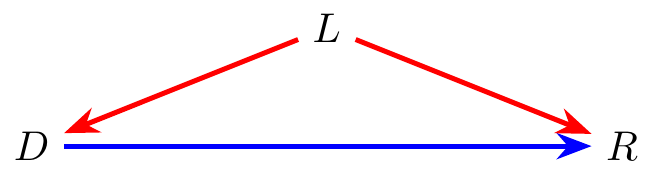
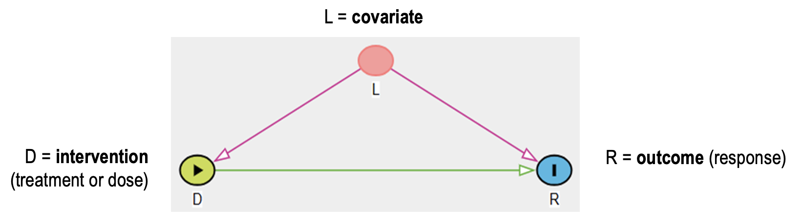
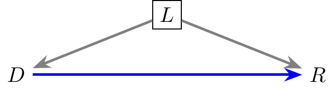
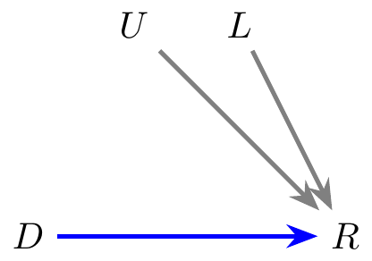
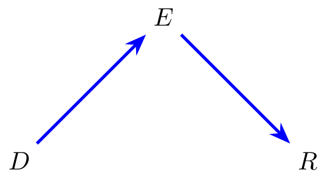
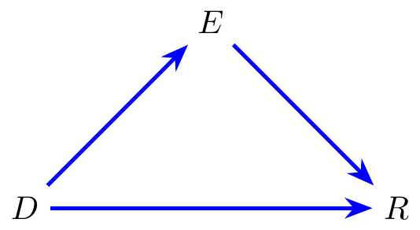
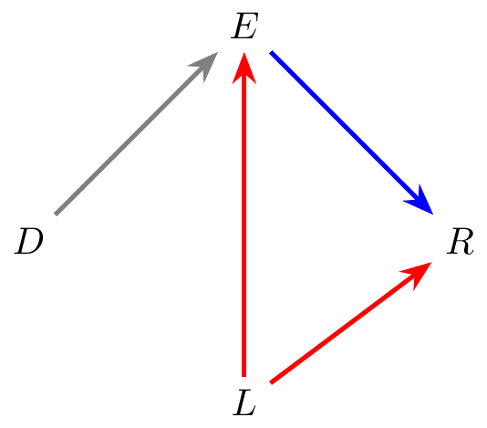
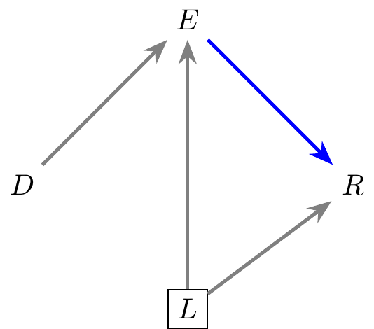

2 Causal Directed Acyclic Graphs
2.1 What is a Causal DAG?
First, a distinction: the Directed Acyclic Graphs (DAGs) discussed here will be specifically causal DAGs which, as the name suggests, convey causal information. In principle, DAGs can also be used to convey non-causal information (e.g. they are sometimes used to specify hierarchical models, which may or may not have causal interpretability), but in the context of this book, a “DAG” can always be understood to have causal semantics attached to it.
In the context of causal inference, DAGs consist of nodes, representing variables, and “directed edges” (a.k.a. arrows), representing causal dependencies between the variables. A proper DAG will contain only unidirectional arrows and will not contain directed loops (“acyclic”), corresponding to the notion that there can be no instantaneous causal feedback (feedback in general can be represented, but it must proceed in a temporal sequence).
2.2 DAG conventions in this book
Our graphical conventions in this book are intended to be similar to those used in the popular “dagitty” web application (Textor et al. (2016)), but with some modifications to better support readers who are red-green colorblind. The conventions we will use are:
- The pathway(s) of causal dependence that we wish to quantify will be shown in blue (whereas in dagitty they show in green).
- We won’t graphically distinguish between treatment nodes, outcome nodes, and other nodes. However, the previous convention makes it clear how to identify the treatment and outcome nodes, by determining where the blue arrows originate and terminate.
- Biasing pathways (or unblocked “backdoor paths” to use the technical term that we will discuss later) will be shown in red.
- Adjusted variables (variables that we control for in our analyses) will be depicted with rectangle-shaped nodes.
- Causal dependencies that are neither biasing nor of direct interest will be depicted in gray (or “grey”, if you prefer).
- Dashed lines to represent potential causal dependencies of a more speculative nature.
We illustrate these conventions in comparison to dagitty conventions in the following figures:

If we then wish to depict the same relationships, but with adjustment for \(L\), we will use:

2.3 Competing terminology
Pharmacometrics and causal inference grew up in different communities, and several everyday words carry different meanings in each. The most important example is “exposure”: to a pharmacometrician, exposure is a drug concentration (or a summary of one, such as \(AUC\)), whereas in the causal inference literature, “exposure” is simply the name for the variable whose causal effect we want to estimate, whatever that variable happens to be. For example, when the question is how dose affects \(AUC\), the causal “exposure” is dose, and the pharmacometric exposure (\(AUC\)) is the outcome. Table 2.1 summarizes the terms most likely to cause confusion.
| Term | In causal inference | In pharmacometrics |
|---|---|---|
| Exposure | The variable whose causal effect is of interest, often denoted \(A\). It may be a dose, a concentration, a drug, a behavior, etc. Synonymous with “treatment” | Drug concentration in the body \(C(t)\), or a summary of the concentration–time profile over a dosing interval (\(AUC\), \(C_{max}\), \(C_{trough}\)) |
| Treatment or Intervention | Synonyms for exposure. It could correspond to a variable that is actually subject to manipulation, or to a merely hypothetical manipulation | Typically a variable like dose that is actually subject to manipulation |
| Time-varying exposure | An exposure whose value can change over follow-up, e.g. could be time-varying dose | The concentration–time profile, \(C(t)\). |
| Point exposure | An exposure that nominally occurs at a single point in time, as opposed to one that varies over follow-up. | Understood most naturally as a concentration at a specified time. |
Where possible, we will use the word “exposure” in the causal inference sense, and we will say “drug concentration” or name the specific metric (e.g. \(AUC\)) when we mean pharmacokinetic exposure. One exception (sorry!): where we write “exposure-response”, you can assume that we are talking about the effect of pharmacokinetic exposure on response (in contrast to “dose-response”).
2.4 Examples of DAGs in Pharmacometrics
2.4.1 Dose-Response in an Individual Randomized Controlled Trial
From a causal perspective, the distinctive feature of a randomized controlled trial (RCT) is the the randomized intervention doesn’t have any causal antecedents, or parents. In the following figure representing a dose-randomized trial, this is represented graphically by the absence of any arrows going into dose \(D\). On the other hand, there may be many factors, some measured (represented below by \(L\)) and some unmeasured (represented below by \(U\)), that affect the response:

Because the trial was randomized, we know that neither \(L\) nor \(U\) is a cause of \(D\). Note that this important knowledge is conveyed in the graph by the absence of arrows into \(D\). This is a special case of a more general principle: depicted arrows merely indicate the plausibility of a causal relationship, while the most consequential assumptions are indicated by the arrows that are not there.
Strictly from a causal inference perspective, there would be no need to adjust for either \(L\) or \(U\) in analyzing data from this RCT. Because \(D\) and \(R\) cannot have any common causes in this RCT setting, there can be no confounding, and there is therefore no need – again, from a causal inference perspective – for adjustment. However, this is a limited perspective that doesn’t tell the whole story. The special preoccupation of causal inference is bias, and there is no opportunity for bias due to confounding in the above scenario. On the other hand precision never ceases to important (even if our DAG has nothing to say about it), and precision in statistical estimation can often be improved by adjusting for covariates such as \(L\), even when such adjustment is not needed to remove bias. In the RCT context, such covariates are sometimes referred to as precision covariates. The special power of RCTs is that they result in marginally unbiased estimates of treatment effects, even if there are many unknown factors like \(U\) that influence the response.
2.4.2 Exposure as a Mediator of Dose-Response
In pharmacometrics, a common causal structure links dose \(D\) to an exposure metric \(E\) (e.g. AUC or \(C_\text{max}\)) and then to a response \(R\). The following DAGs illustrate three important variants of this structure.
In the simplest case, the effect of \(D\) on \(R\) is fully mediated by \(E\). A mediator is a node on the pathway between intervention and outcome. Full mediation is a strong assumption.

A direct path from \(D\) to \(R\) (bypassing \(E\)) can be added to capture effects not mediated through the measured exposure. The total causal effect of \(D\) on \(R\) then decomposes as: \[\text{Total effect} = \text{Direct effect } (D \to R) + \text{Indirect effect } (D \to E \to R).\] This distinction matters in practice: when the measured exposure (e.g. plasma AUC) is a poor proxy for exposure at the site of action — such as the brain or lungs — the D-to-E-to-R path alone may not capture the full effect of dose on response. In such settings, estimating the total effect of \(D\) on \(R\) directly is a more robust target.

2.4.3 Exposure-Response
In some cases, e.g. for many systemically acting small molecules, there may be good reason to believe that systemic exposure fully mediates the effect of dose on response. When this is in fact the case, it will often be of interest to characterize the effect of exposure on response because, as summarized by Braniff (2026)
While dose is a natural intervention variable, dose–response inference is specific to the formulation, regimen, and delivery mechanism studied and does not generalize readily across many design dimensions relevant to development. A key contribution of ER analysis is the decomposition of the dose-exposure-response relation into two separable questions: is the dose achieving adequate exposure, and is that exposure sufficient to drive response? This decomposition enables modular optimization so that formulation, regimen, and delivery can be modified while maintaining clear exposure targets, guiding development across changing phases and populations.
As appealing as this decomposition is, it can only be achieved under specific conditions. We already discussed on of these conditions above: the argument only works when the effect of dose on response is fully mediated through the exposure metric. We now consider an additional requirement.
When a covariate \(L\) affects both \(E\) and \(R\), it confounds the exposure-response relationship, opening a biasing backdoor path \(E \leftarrow L \rightarrow R\). A concrete example: in an obesity indication, body weight (\(L\)) influences drug exposure (\(E\)) through its effect on pharmacokinetics, while also independently increasing the risk of cardiovascular events (\(R\)). A naïve exposure-response analysis would therefore conflate the drug effect with the background cardiovascular risk driven by body weight.

